생산자동화산업기사 (2019-03-03 기출문제)
1과목: 기계가공법 및 안전관리
1. 방전가공용 전극 재료의 구비 조건으로 틀린 것은?
- 가공정밀도 높을 것
- 가공전극의 소모가 적을 것
- 방전의 안전하고 가공속도 빠를 것
- 전극 제작할 때 기계가공이 어려울 것
(정답률: 89%)

2. 드릴가공에서 깊은 구멍을 가공을 가공하고자 할 때 다음 중 가장 좋은 드릴가공 조건은?
- 회전수와 이송을 느리게 한다.
- 회전수는 빠르게 이송을 느리게 한다.
- 회전수는 느리게 이송은 빠르게 한다.
- 회전수와 이송은 정밀도와는 관계없다.
(정답률: 51%)
3. ø13이하의 작은 구멍 뚫기에 사용하며 작업대 위에 설치하여 사용하고, 드릴 이송은 수동하는 소형 드릴링머신은?
- 다두 드릴링머신
- 직립 드릴링머신
- 탁상 드릴링머신
- 레이디얼 드릴링머신
(정답률: 76%)
4. 드릴링 머신의 안전사항으로 틀린 것은?
- 장갑을 끼고 작업을 하지 않는다.
- 가공물을 손으로 잡고 드릴링 한다,
- 구멍 뚫기가 끝날 무렵은 이송을 천천히 한다.
- 얇은 판의 구멍가공에는 보조 판 나무를 사용하는 것이 좋다.
(정답률: 85%)
5. 연삭숫돌의 입도(grain size) 선택의 일반적인 기준으로 가장 적합한 것은?
- 절삭 깊이와 이송량이 많고 거친 연삭은 거친 입도를 선택
- 다듬질 연삭 또는 공구를 연삭할 때는 거친 입도를 선택
- 숫돌과 일감의 접촉 면적이 작을 때는 거친 입도를 선택
- 연성이 있는 재료는 고운 입도를 선택
(정답률: 63%)
6. 구성인선의 방지 대책으로 틀린 것은?
- 경사각을 작게 할 것
- 절삭 깊이를 적게 할 것
- 절삭속도를 빠르게 할 것
- 절삭공구의 인선을 날카롭게 할 것
(정답률: 65%)
7. 서보기구의 종류 중 구동 전동기로 펄스 전동기를 이용하며 제어장치로 입력된 펄스 수만큼 움직이고 검출기나 피드백 회로가 없으므로 구조가 간단하며, 펄스 전동기의 회전 정밀도와 볼 나사의 정밀도에 직접적인 영향을 받는 형식은?
- 개방 회로 방식
- 폐쇄 회로 방식
- 반 폐쇄 회로 방식
- 하이브리드 서보 방식
(정답률: 66%)
8. 윤활유의 사용 목적이 아닌 것은?(오류 신고가 접수된 문제입니다. 반드시 정답과 해설을 확인하시기 바랍니다.)
- 냉각
- 마찰
- 방청
- 윤활
(정답률: 74%)
9. 게이지 블록 구조형상의 종류에 해당되지 않은 것은?
- 호크형
- 캐리형
- 레버형
- 요한슨형
(정답률: 56%)
10. 밀링 분할판의 브라운 샤프형 구멍열을 나열한 것으로 틀린 것은?
- NO.1 - 15, 16, 17, 18, 19, 20
- NO.2 - 21, 23, 27, 29, 31, 33
- NO.3 - 37, 39, 41, 43, 47, 49
- NO.4 - 12, 13, 15, 16, 17, 18
(정답률: 72%)
11. 주성분이 점토와 장석이고 균일한 기공을 나타내며 많이 사용하는 숫돌의 결합제는?
- 고무 결합제(R)
- 셀락 결합제(E)
- 실리케이트 결합제(S)
- 비트리파이드 결합제(V)
(정답률: 66%)
12. 일반적인 밀링작업에서 절삭속도와 이송에 관한 설명으로 틀린 것은?
- 밀링커터의 수명을 연장하기 위해서는 절삭속도는 느리게 이송을 적게 한다.
- 날 끝이 비교적 약한 밀링커터에 대해서는 절삭속도는 느리게 이송을 적게 한다.
- 거친 절삭에서는 절삭 깊이를 얕게, 이송은 작게, 절삭속도를 빠르게 한다.
- 일반적으로 나비와 지름이 작은 밀링커터에 대해서는 절삭속도를 빠르게 한다.
(정답률: 62%)
13. 측정에서 다음 설명에 해당하는 원리는?
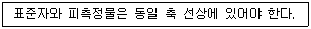
- 아베의 원리
- 버니어의 원리
- 에어리의 원리
- 해르쯔의 원리
(정답률: 78%)
14. 절삭공구에서 칩 브레이커(Chip Breaker)의 설명으로 옳은 것은?
- 전단형이다.
- 칩의 한 종류이다.
- 바이트 생크의 종류이다.
- 칩이 인위적으로 끊어지도록 바이트에 만든 것이다.
(정답률: 83%)
15. 가공능률에 따라 공작기계를 분류할 때 가공할 수 있는 기능이 다양하고, 절삭 및 이송속도의 범위도 크기 때문에 제품에 맞추어 절삭조건을 선정하여 가공할 수 있는 공작기계는?
- 단능 공작 기계
- 만능 공작 기계
- 범용 공작 기계
- 전용 공작 기계
(정답률: 60%)
16. 호칭치수가 200 mm인 사인 바로 21° 30′의 각도를 측정할 때 낮은 쪽 게이지 블록의 높이가 5mm 라면 높은 쪽은 얼마인가? (단, sin 21° 30′ = 0.3665 이다.)
- 73.3 mm
- 78.3 mm
- 83.3 mm
- 88.3 mm
(정답률: 51%)
17. 마이크로미터의 나사 피치가 0.2 mm 일 때 심블의 원주를 100 등분하였다면 심블 1눈금의 회전에 의한 스핀들의 이동량은 몇 mm인가?
- 0.0⑤
- 0.002
- 0.01
- 0.02
(정답률: 79%)
18. 밀링머신에서 커터 지름이 120 mm, 한 날 당 이송이 0.1 mm, 커터 날수가 4날, 회전수기 900rpm 일 때, 절삭속도는 약 몇 m/min인가?
- 33.9
- 113
- 214
- 339
(정답률: 58%)
19. 절삭공구에서 크레이터 마모(crater wear)의 크기가 증가할때 나타나는 현상이 아닌 것은?
- 구성인선(built up edge)이 증가한다,
- 공구의 윗면경사각이 증가한다.
- 칩의 곡률반지름이 감소한다.
- 날끝이 파괴되기 쉽다.
(정답률: 52%)
20. 슬로터(slotter)에 관한 설명으로 틀린 것은?
- 규격은 램의 최대행정과 테이블의 지름으로 표시된다.
- 주로 보스(boss)에 키 홈을 가공하기 위해 발달된 기계이다,
- 구조가 세이퍼(shaper)를 수직으로 세워 놓은 것과 비슷하여 수직 세이퍼(shaper)라고도 한다.
- 테이블의 수평길이 방향 왕복운동과 공구의 테이블 가로방향 이송에 의해 비교적 넓은 평면을 가공하므로 평삭기라고도 한다.
(정답률: 52%)
2과목: 기계제도 및 기초공학
21. 다음 중 V 벨트 전동장치에서 사용하는 벨트의 단면각은?
- 34°
- 36°
- 38°
- 40°
(정답률: 59%)
22. 다음 나사를 나타낸 도면 중 미터 가는 나사를 나타낸 것은?
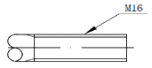
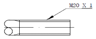
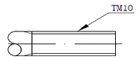
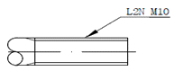
(정답률: 63%)
23. 도면을 작성할 때 다음 선들이 모두 겹쳤을 경우 가장 우선적으로 나타내야 하는 선은?
- 절단선
- 무게 중심선
- 치수 보조선
- 숨은선
(정답률: 75%)
24. 다음 중 각도치수의 허용한계 값 지시 방법이 틀린 것은?
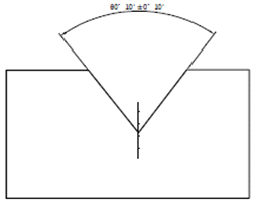
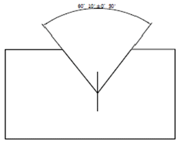
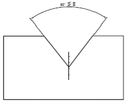
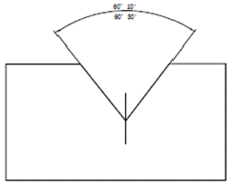
(정답률: 75%)
25. 그림과 같이 절단된 편심 원뿔의 전개법으로 가장 적합한 것은?
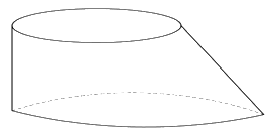
- 삼각형법
- 동심원법
- 평행선법
- 사각형법
(정답률: 65%)
26. 다음 기하공차에 대한 설명으로 옳지 않은 것은?
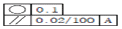
- 기하공차 값 0.1 mm는 동심도 기하공차가 적용된다.
- 평행도 기하공차의 데이텀을 지시하는 문자 A이다.
- 평행도 기하공차 값은 지정길이 100mm에 대해 0.02 mm이다.
- 공차가 지시된 부분은 2개의 기하공차가 모두 적용된다.
(정답률: 55%)
27. 단면의 표사와 단면도의 해칭에 관한 설명으로 옳은 것은?
- 단면 면적이 넓은 경우에는 그 외형선을 따라 적절한 범위에 해칭 또는 스머징을 한다.
- 해칭선의 각도는 주된 중심선에 대하여 60°로 하여 굵은 실선을 사용하여 등간격으로 그린다.
- 인접한 다른 부품의 단면은 해칭선의 방향이나 간격을 변경하지 않고 동일하게 사용한다.
- 해칭 부분에 문자, 기호 등을 기입할 때는 해칭을 중단하지 않고 겹쳐서 나타내야한다.
(정답률: 55%)
28. 선의 종류와 용도에 대한 내용으로 틀린 것은?
- 굵은 실선 : 대상물이 보이는 부분의 모양을 표시하는 데 사용된다.
- 가는 1점 쇄선 : 중심이 이동한 중심궤적을 표시하는데 사용된다.
- 가는 2점 쇄선 : 얇은 두께를 가진 부분을 나타내는데 사용된다.
- 굵은 1점 쇄선 : 특수한 가공을 하는 부분 등 특별한 요구사항을 적용할 수 있는 범위를 표시하는 데 사용된다.
(정답률: 74%)
29. 그림과 같이 표면의 결 도시기호가 있을 때 이에 대한 설명으로 옳지 않은 것은?
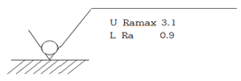
- 양측 상한 및 하한치를 적용한다.
- 재료 제거를 허용하지 않은 공정이다.
- 10개의 샘플링 길이를 평가 길이로 적용한다.
- 상한치는 산술평균편차에 max-규칙을 적용한다.
(정답률: 67%)
30. 제 3각 정투상법으로 이래 입체도의 정면도, 평면도, 좌측면도를 가장 적합하게 나타낸 것은?
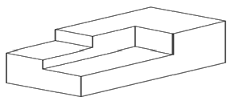
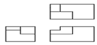
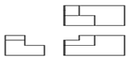
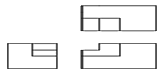
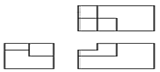
(정답률: 82%)
31. 폴리(pulley)sks 기어(gear) 등이 장착되어 회전하는 축에서 방생되는 모멘트의 설명으로 옳은 것은?
- 굽힘 모멘트만 발생한다.
- 비틀림 모멘트만 발생한다.
- 굽힘 모멘트와 비틀림 모멘트가 동시에 발생한다.
- 굽힘 모멘트와 비틀림 모멘트가 전혀 발생하지 않는다.
(정답률: 69%)
32. 전압을 나타내는 단위는?
- 옴[Ω]
- 볼트[V]
- 와트[W]
- 암페어[A]
(정답률: 79%)
33. 다음 그림과 같이 높이가 115m에서 수평으로 물체를 던졌더니, 던진 곳에서부터 92.5m인 지점에 물체가 떨어졌다. 물체의 초기속도는 얼마인가? (단, 중력가속도 g= 9.8㎨이다.)
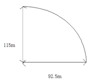
- 16.1 m/s
- 19.1 m/s
- 21.1 m/s
- 23.1 m/s
(정답률: 47%)
34. 다음 그림에서 스페너를 이용하여 볼트를 조이려고 한다. 이때 발생하는 토크(T)를 구하는 식으로 옳은 것은?
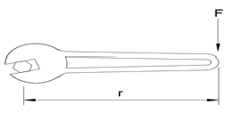
- T = F × r
- T = F × 2r
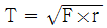
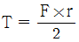
(정답률: 74%)
35. 1kWh의 일량을 바르게 표현한 것은?
- 1kWh의 동력을 30분 사용했을 때의 일량
- 1kWh의 동력을 1시간 사용했을 때의 일량
- 1kWh의 동력을 2시간 사용했을 때의 일량
- 1kWh의 동력을 4시간 사용했을 때의 일량
(정답률: 84%)
36. 전류에 대한 설명으로 틀린 것은?
- 전류는 기전력이라고도 한다.
- 암페어[A]를 단위로 사용한다.
- 전류는 도체 내의 자유전자들의 움직임으로 발생된다.
- 회로 내 임의의 점에서의 전류의 크기는 매 초 그 지점을 통과하는 전하량으로 정한다.
(정답률: 68%)
37. 직경이 52 cm일 관속에 흐르는 물의평균속도가 5m/s 일떄 유량은 약 몇 m3/s인가?
- 0.16
- 1.06
- 10.6
- 15.6
(정답률: 56%)
38. 응력에 대한 설명으로 틀린 것은?
- 하중에 비례한다.
- 단면적에 비례한다.
- 단위는 Pa도 사용한다.
- 응력에는 전단응력, 인장응력, 압축응력, 등이 있다.
(정답률: 69%)
39. 단면적이 2 cm2이고 길이가 10m인 동선의 전기저항[Ω]은? (단, 구리의 비저항은 17×10-8 Ω·m)
- 8.5 × 10-4
- 8.5 × 10-8
- 11.6 × 10-4
- 11.6 × 10-8
(정답률: 45%)
40. 다음 ( ) 안에 들어갈 알맞은 단위를 순서대로 쓴 것은?
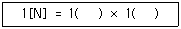
- m, s
- kg, m
- m/s, g
- kg, m/s2
(정답률: 70%)
3과목: 자동제어
41. 시리얼 통신의 전송 속도를 나타내는 것은?
- bit
- bus
- baud
- byte
(정답률: 60%)
42. 서보기구에 대한 설명으로 틀린 것은?
- 제어량이 기계적인 변위인 자동 제어계를 의미한다.
- 일반적으로 신호변환부와 파워증폭부로 구성된다.
- 신호변환 시 전기식보다는 공압식이 많이 사용된다.
- 서보기구의 파워증폭부는 중력 및 조작을 행하는 부분이다.
(정답률: 76%)
43. 제어계의 성능에서 증요한 3가지 특성값이 아닌 것은?
- 속응성
- 안정도
- 결합계수
- 정상편차
(정답률: 66%)
44. 계전기 방식과 비교한 전자 제어 방식의 특징으로 아닌 것은?
- 수명이 길다.
- 동작속도가 빠르다
- 전기적 노이즈 강하다.
- 입력과 출력의 확장성이 우수하다.
(정답률: 74%)
45. 시퀀스제어의 구성에서 검출부에 해당되지 않은 것은?
- 타이머
- 리밋스위치
- 압력스위치
- 온도스위치
(정답률: 70%)
46. 엔코더를 이용해서 검출하기 어려운 것은?
- 모터의 토크 검출
- 모터의 회전방향 검출
- 모터의 회전속도 검출
- 기계장치의 이송서리 검출
(정답률: 52%)
47. C++언어의 특징이 아닌 것은?
- 기존 C언어와 호환성을 가진다.
- 래더 기반의 PLC 전용 언어이다.
- 기존 C언어에서 객체지향 개념이 추가되었다.
- 클래스(class) 단위로 작성하는 모듈화 언어이다.
(정답률: 76%)
48. 계자 코일에 전류를 흘러줌으로써 전자석을 만들어 밸브를 여닫는 밸브는?
- 수동밸브
- 전동밸브
- 전자밸브
- 체크밸브
(정답률: 81%)
49. 다음 함수를 라플라스 변환한 결과로 옳은 것은?
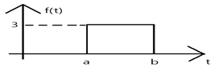
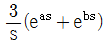
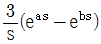
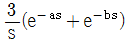
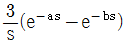
(정답률: 47%)
50. 어떤 계의 단위 임펄스 입력이 가해질 경우 출력이 e-3t나타났다. 이 계의 전달함수는?
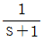
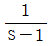
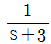
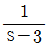
(정답률: 65%)
51. 입력기기로부터 칩입하는 노이즈를 방지할 수 있는 대책으로 적절한 것은?(오류 신고가 접수된 문제입니다. 반드시 정답과 해설을 확인하시기 바랍니다.)
- 배리스터 사용
- 서미스터 사용
- 전원 필터 사용
- 정전압회로 사용
(정답률: 48%)
52. 일반적으로 PLC 본체의 구성에 포함되지 않은 것은?
- CPU
- 전원부
- 입·출력부
- 프로그램 로더
(정답률: 73%)
53. 다음 설명에 해당되는 원리는?
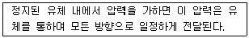
- 연속의 법칙
- 파스칼의 원리
- 베르누이의 정리
- 벤츄리관의 원리
(정답률: 77%)
54. PLC의 DIO(Digital Input Output) 장치에 인터페이스 하기 적절치 못한 소자는?
- 근접 센서
- 포텐쇼미터
- 광전 스위치
- 토글 스위치
(정답률: 69%)
55. 상수 K를 라플라스 변환 값은?
- K2
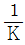
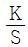
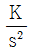
(정답률: 61%)
56. 다음 그림의 전달함수(
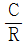
)로 옳은 것은?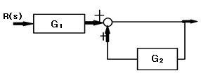
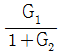
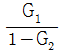
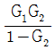
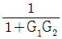
(정답률: 48%)
57. 물체의 위치, 방위, 자세 등의 기계적 변위를 제어량으로 하여 목표값의 임의 변화에 추종하도록 구성된 제어계?
- 서보 기구
- 자동 조정
- 프로그램 제어
- 프로세스 제어
(정답률: 76%)
58. 10t5을 라플라스 변환한 결과로 옳은 것은?
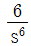
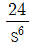
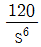
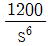
(정답률: 58%)
59. 생산 공정을 사람 대신 자동제어로 대체하였을 때 장점이 아닌 것은?
- 인건비를 감축시킬 수 있다.
- 생산량을 중대시킬 수 있다.
- 초기 시설투자비가 감소한다.
- 제품의 품질이 균일화되고 향상되어 불량품이 감소된다.
(정답률: 81%)
60. 제어계에 대한 설명 중 틀린 것은?
- 컴퓨터 제어계에서 샘플링 주기가 길어질수록 정밀한 제어가 가능하다.
- 제어대상을 디지털 제어기에 연결하려면 A/D변환기와 D/A변환가 필요하다.
- 아날로그 제어계는 아날로그 형태의 입력과 피드백 신호가 연속적으로 주어진다.
- 아날로그 제어계는 증푹, 미분, 적분, 특성이 일정값으로 고정되어 있으므로 제어기구의 특성을 바꾸기 어렵다.
(정답률: 52%)
4과목: 메카트로닉스
61. 정현파의 최댓값이 10V일 때, 평균값은 약 D 얼마인가?
- 0V
- 5V
- 6.37V
- 7.07V
(정답률: 50%)
62. 다음 중 온도 측정에 가장 적합한 것은?
- cds
- 0다이오드
- 타코미터
- 서미스터
(정답률: 73%)
63. 마이크로프로세서 내에서 산술연산의 기본 연산은?
- 곱셈
- 덧셈
- 뻴셈
- 나눗셈
(정답률: 80%)
64. 다음 논리식을 간소화한 결과로 옳은 것은?
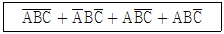
- C
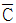
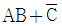
- A+B+C
(정답률: 64%)
65. DJejS 도선에 5A의 전류를 1분간 흘렸다면 이 도선을 통하여 이동한 전하량은 몇 [C] 인가?
- 3
- 20
- 180
- 300
(정답률: 72%)
66. 인간의 시감각과 비슷한 분광 감도를 가진 센서는?
- 가스센서
- 습도센서
- 컬러센서
- 유도형센서
(정답률: 78%)
67. 다음 카르노도가 나타내는 논리식은?
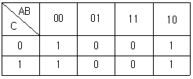
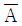
(정답률: 55%)
68. 디지털 시스템에서 음수의표현 방법이 아닌 것은?
- 1의 보수에 의한 표현
- 2의 보수에 의한 표현
- 3초과 코드에 의한 표현
- 부호와 절대값에 의한 표현
(정답률: 70%)
69. 이상적인 연산 증폭기의 특징으로 옳은 것은?
- 출력 임피던스가 1이다.
- 무한대의 대역폭을 갖는다.
- 전압 이득이 한정되어 있다.
- 입력 임피던스가 한정되어 있다.
(정답률: 67%)
70. 위치 결정의 불학정성과 고속 동작에서 감속기의 강성이 약학 것을 개선학기 위해 감속 등의 동력전달부품을 사용하지 않고 로봇 암에 직접 모터를 부착하여 움직이는 모터는?
- AC 서보모터
- DC 서보모터
- 라니어 서보모터
- 다이렉트드라이브 서보모터
(정답률: 75%)
71. 심진수 5.75를 이진수로 변환한 결과로 옳은 것은?
- 101.11
- 101.111
- 101.01
- 101.001
(정답률: 66%)
72. 다음 기호의 명령은?
- 다이오드
- 트랜지스터
- 발광다이오드
- 제너다이오드
(정답률: 76%)
73. 헨드 탭의 파손 원인으로 옳은 것은?
- 너무 빠르게 절삭작업을 했다.
- 구멍을 충분히 크게 가공했다.
- 가공 중 태핑 오일을 주입했다.
- 탭이 구멍 방향과 동일선상에 있었다.
(정답률: 77%)
74. 시간의 변화에 관계없이 그 크기와 방향이 일정한 전류를 무엇이라고 하는가?
- 교류
- 저항
- 직류
- 주파수
(정답률: 72%)
75. 스트레인게이지의 특징으로 옳은 것은?
- 정밀도 낮다.
- 온도의 영향이 크다.
- 직류에서만 사용이 가능하다.
- 정압뿐만 아니라 동압에서도 사용 가능하다.
(정답률: 56%)
76. 저장에 비례하여 기전력이 발생하는 물리적 현상을 응용한 것으로 자계의 방향이나 감도를 측정할 수 있는 자기센서는?
- 리졸버(resolver)
- 서모파일(thermopile)
- 홀 센서(hall sensor)
- 타코 제너레이터(tacho generator)
(정답률: 46%)
77. 전류를 한 방향으로만 흐르게 하고, 역방향으로 흐르지 못하게 하는 성질을 가진 반도체 소자는?
- 저항
- 인덕터
- 콘덴서
- 다이오드
(정답률: 76%)
78. 전동기의 자장 내에 있는 도체의 전류가 그림과 같이흘러나올 경우 도체가 받는 힘의 방향으로 옳은 것은?
- A
- B
- C
- D
(정답률: 65%)
79. v = 100sin377t[V]의 교류에서 실효치의 대략적인 전압 v와 주파수 f가 옳은 것은?
- v = 70.7V, f = 60Hz
- v = 100V, f = 50Hz
- v = 140.7V, f = 60Hz
- v = 141V, f = 50Hz
(정답률: 50%)
80. 반도체에서 공핍충 양단에는 전위차가 존재하며 이러한 전위차가 존재하면 이러한 전위차는 전자가 움직이기 위한 에너지의 양이다 이러한 전위차를 무엇이라고 하는가?
- 순간전압
- 전압강하
- 전위장벽
- 항복전압
(정답률: 64%)